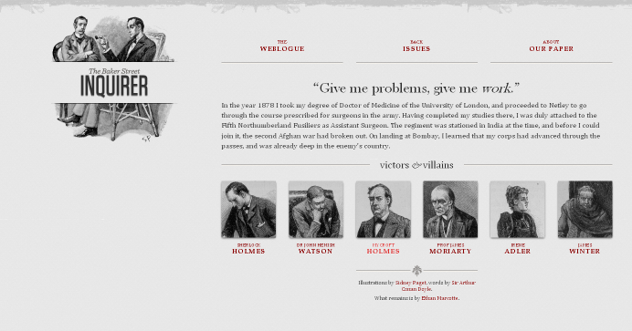

Responsive Web Design: CSS Media Query
Media queries can be used to include style sheets (media attribute) or in CSS rules (@media rule) or @import statement
Link to stylesheet
<link rel="stylesheet" type="text/css"
media="screen and (max-device-width: 480px)"
href="smallscreen.css" />CSS rule
@media screen and (max-device-width: 480px) {
/* rules for small screens */
.column { float: none; }
}@import statement
@import url('smallscreen.css') screen and (max-device-width: 480px);